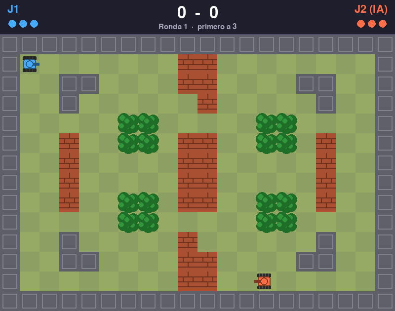

- IA con 3 niveles: patrulla, persigue o esquiva tus balas y agarra power-ups.
- 4 arenas dibujadas en texto (
arena1.txtaarena4.txt). - Las balas rebotan en los muros, los ladrillos se rompen, el agua no se cruza y en los arbustos te escondes.
- Power-ups: E escudo, 3 triple disparo, V velocidad, M mina.
- 3 vidas por ronda, tanques con inercia, gana el primero con 3 rondas (mejor de 5).
Necesita: Python 3 + pygame · Linux, Windows y Mac
⬇ Descargar .zip (20 KB) 🎮 Jugar en el navegador▶️ Cómo jugar
- Descarga y descomprime el zip.
- Instala pygame:
pip install pygame - Corre
python3 tanques.py(en Windows:python tanques.py; en Linux/Mac también sirve./jugar.sh).
🎮 Controles
| W A S D | Jugador 1 se mueve |
| ESPACIO | J1 dispara |
| Q | J1 pone mina |
| Flechas | Jugador 2 se mueve |
| ENTER | J2 dispara / empezar |
| SHIFT der. | J2 pone mina |
| P | pausa |
| M | menú |
| ESC | salir |
⌨️ Cambiar los controles
Abre controles.txt (está junto a tanques.py) y cambia la tecla después del =. Así viene de fábrica:
j1_adelante = w j1_atras = s j1_izquierda = a j1_derecha = d j1_disparar = space j1_mina = q j2_adelante = up j2_atras = down j2_izquierda = left j2_derecha = right j2_disparar = return j2_mina = right shift pausa = p empezar = return menu = m salir = escape
Nombres válidos: letras (a, b...), flechas (up, down, left, right), space, return, tab, left shift, left ctrl y números. Si escribes una tecla que no existe, el juego avisa y usa la de siempre.
✏️ Haz tu propio nivel
Los niveles están en arena1.txt a arena4.txt (14 filas de 20 letras). Son dibujos de texto: cada letra es un cuadrito.
# | muro (las balas rebotan) |
L | ladrillo (se rompe de un tiro) |
A | agua (las balas pasan, los tanques no) |
B | arbusto (esconde al tanque) |
. | piso |
1 | donde empieza el jugador 1 |
2 | donde empieza el jugador 2 |
Edita el dibujo, guarda, y corre: python3 tanques.py
- Copia
arena1.txtaarena5.txt, edítalo, y el menú lo encuentra solo. - Las líneas que empiezan con
#(con espacio) son comentarios.
🔧 Para cambiar cómo se siente
Arriba de tanques.py: VEL_TANQUE, ACELERACION, FRENO, VEL_BALA, RECARGA, VIDAS, RONDAS_PARA_GANAR, CADA_CUANTO_POWERUP. La IA está en la clase IA.